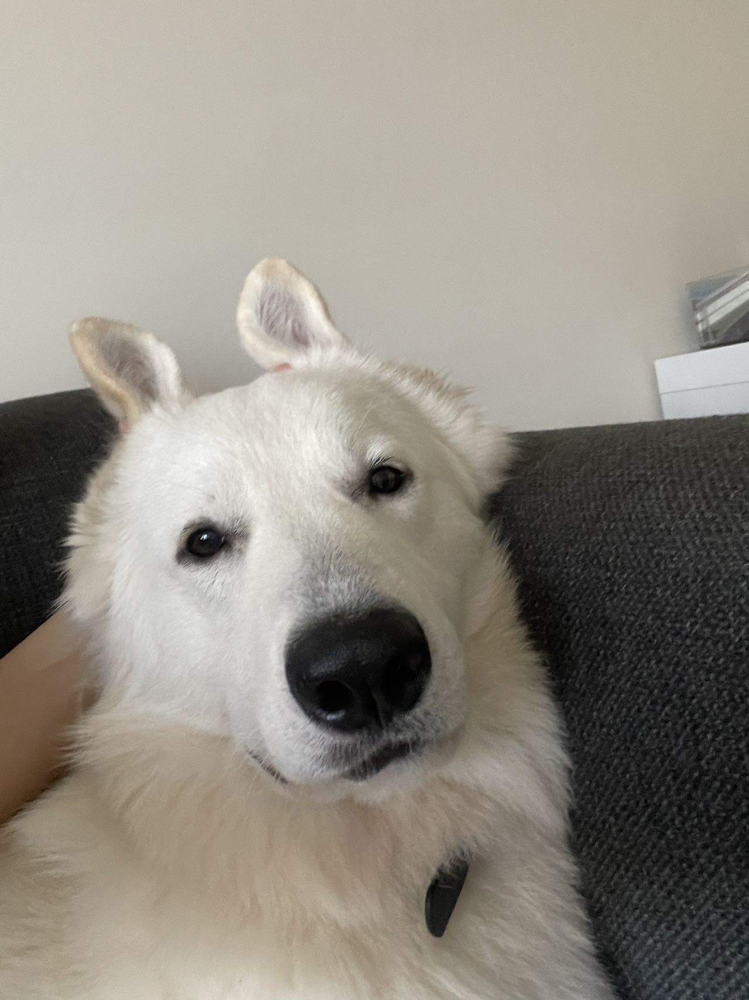

Toto is an affectionate Labrador Retriever, a breed known for their friendly and sociable nature. Toto is a five-year-old girl, referring to her age in dog years, which means she's reached adulthood but still retains her playful and lively spirit.
One of Toto's favorite indulgences is snacking. Labrador Retrievers are renowned for their hearty appetites, and Toto is no exception. She has a keen interest in treats and snacks and eagerly looks forward to enjoying them. From specially made dog treats to delicious morsels, Toto finds joy in savoring a tasty snack.
When Toto becomes tired after a day filled with activities, she likes to find a cozy spot to rest. Whether it's laying down on a soft cushion, sprawling on the floor, or simply plopping down wherever she feels comfortable, Toto appreciates the feeling of relaxation that comes with winding down.
Toto has a naturally friendly and outgoing demeanor towards both people and other dogs. She eagerly greets strangers with a wagging tail and a happy face, always ready to make new friends. Toto's sociable nature makes her a beloved companion in various social settings, where she shines in her ability to engage with others and foster connections.
Making friends comes naturally to Toto, and she thrives on the interactions and bonds she forms with both humans and canines. Her friendly and approachable nature makes her a joy to be around, spreading warmth and happiness wherever she goes.
In summary, Toto, the friendly five-year-old Labrador Retriever girl, has a penchant for snacks and enjoys taking moments to rest when tired. Her social nature and love for making friends make her a delightful companion who brings joy and happiness to those around her.

Haru is a stunning White German Shepherd, a breed known for its elegance and intelligence. At just one year old, Haru is still a young pup, bursting with energy and curiosity. He possesses an inexhaustible amount of enthusiasm and is always ready for new adventures.
One of Haru's absolute favorite activities is playing ball. Whether it's a game of fetch or simply chasing after a rolling ball, Haru's eyes light up with excitement. He eagerly bounds after the ball, his agile movements showcasing the athleticism of his breed. Playing ball not only provides Haru with physical exercise but also engages his sharp mind, as he focuses on tracking, retrieving, and bringing the ball back to his human companion.
Despite his powerful appearance, Haru has a gentle and timid nature. He may have an imposing presence, with a strong and sturdy physique, but deep down, he is a sensitive soul. Loud noises or unfamiliar situations can make him anxious and wary. However, once he feels safe and secure, his loving and loyal personality shines through.
At home, Haru seeks comfort and reassurance from his trusted human companion. He has a deep bond with his master and finds solace in their presence. When it's time to rest, Haru prefers to sleep in the arms of his beloved owner, finding warmth and security in their embrace.
Haru's combination of boundless energy, love for ball games, powerful appearance, and timid nature makes him a unique and captivating companion. With his striking white coat and endearing personality, he attracts attention wherever he goes, and his preference for sleeping in the arms of his master adds an adorable touch to his character.
Traits: Capable of shaking hands, adept at guiding the master across the road, proficient at
sitting down, responsive to the master's calls and promptly returning to their side.
Traits: Possesses robust limbs, exhibits swift movement and affectionate. It curls up in the
owner's arms to keep them warm when the owner is sleeping.